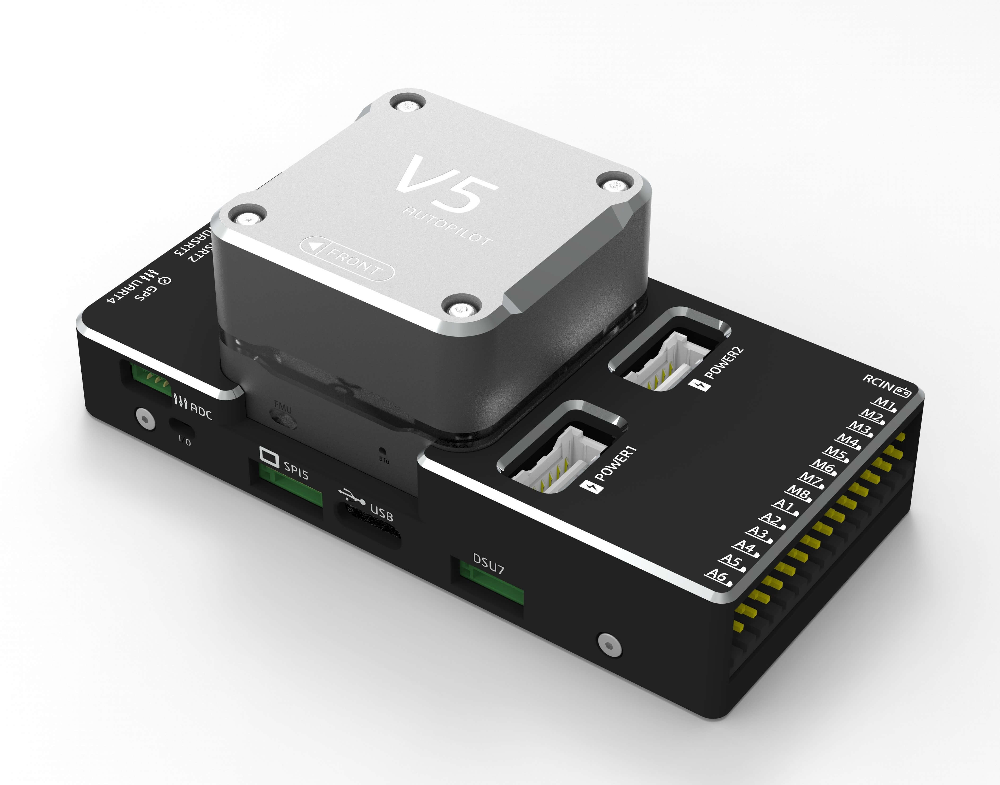
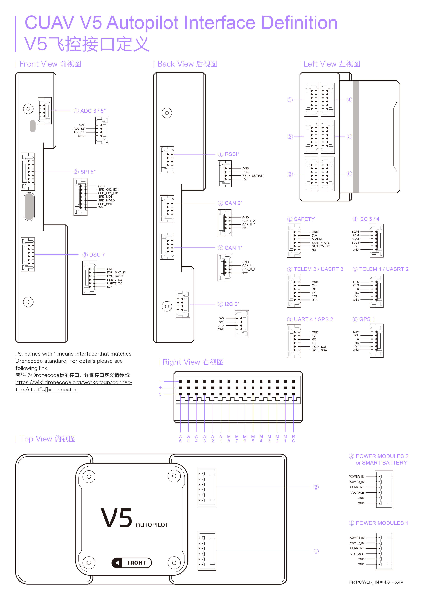

CUAV v5 Overview¶
{kind=link}
The CUAV v5 is an advanced autopilot designed and made by CUAV. The board is based on the FMUv5 open hardware design, with further attribution here. It is intended primarily for academic and commercial users.
Specifications¶
Processor
32-bit ARM Cortex M7 core with DPFPU
216 Mhz/512 KB RAM/2 MB Flash
32-bit co-processor
Sensors
InvenSense ICM20689 accelerometer / gyroscope
Bosch BMI055 accelerometer / gyroscope
MS5611 barometer
IST8310 magnetometer
Power
Operating power: 4.3~5.4V
USB Input: 4.75~5.25V
High-power servo rail, up to 36V (servo rail does not power the autopilot)
Dual voltage and current monitor inputs
CUAV v5 can be triple redundant if power is provided to both battery monitor inputs and the USB port
Interfaces
8 IOMCU PWM servo outputs
6 FMU PWM outputs (D-Shot capable)
3 dedicated PWM/Capture inputs on FMU
S.Bus servo output
R/C inputs for CPPM and S.Bus
Analogue / PWM RSSI input
5x general purpose serial ports
4x I2C ports
4x SPI buses enabled
2x CAN Bus ports
Other
Weight: 90g
Dimensions: 44mm x 84mm x 12mm
Operating temperature: -20 ~ 80°c（Measured value）
Where to Buy¶
Quick Start¶
Use the Pixhawk Wiring QuickStart as a general guide.
{kind=link}
More Information¶
see more documentation here
More Images¶

[copywiki destination=”plane,copter,rover,blimp”]